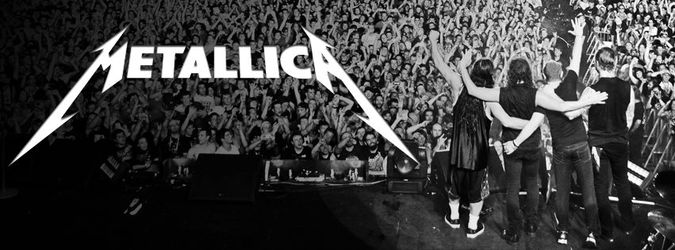
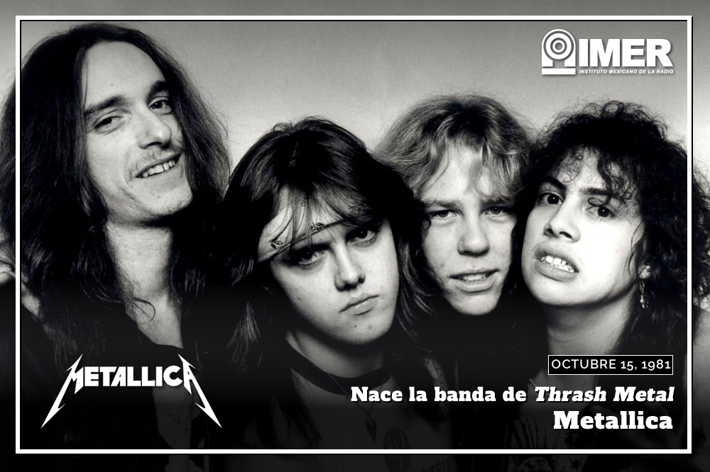
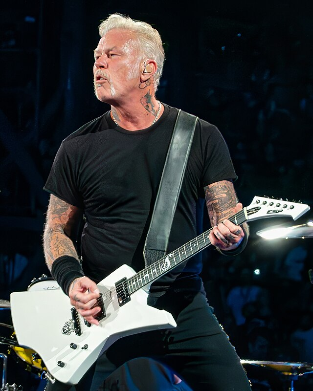
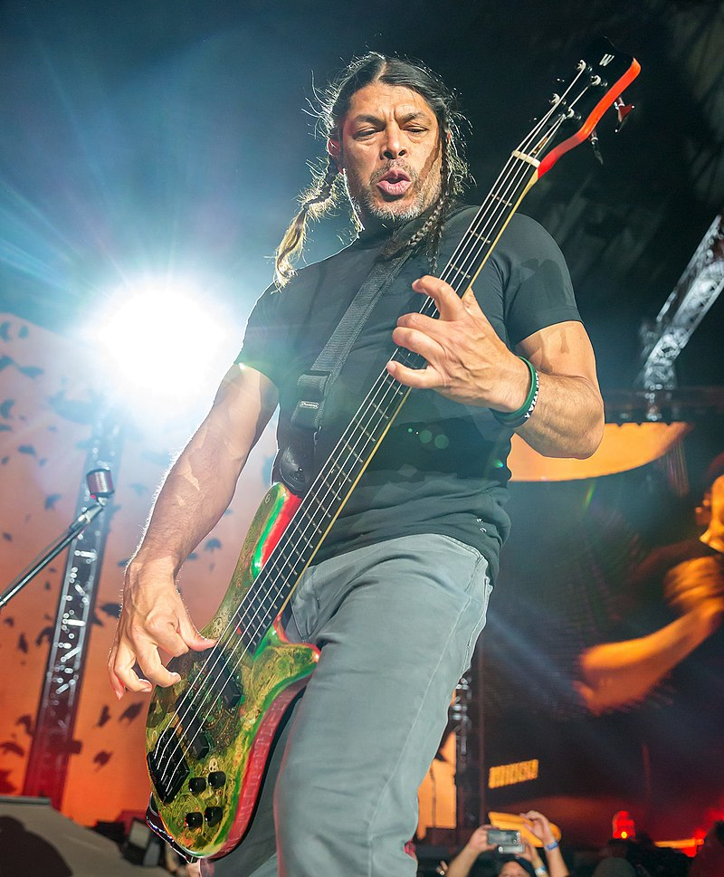
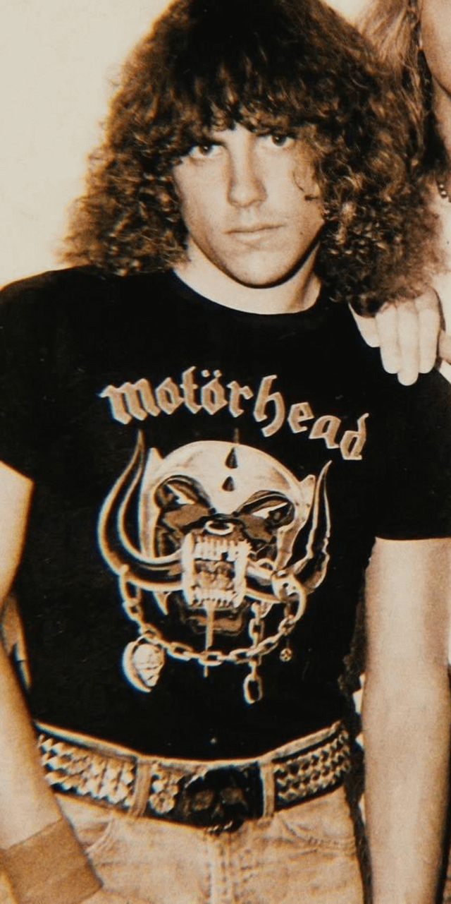
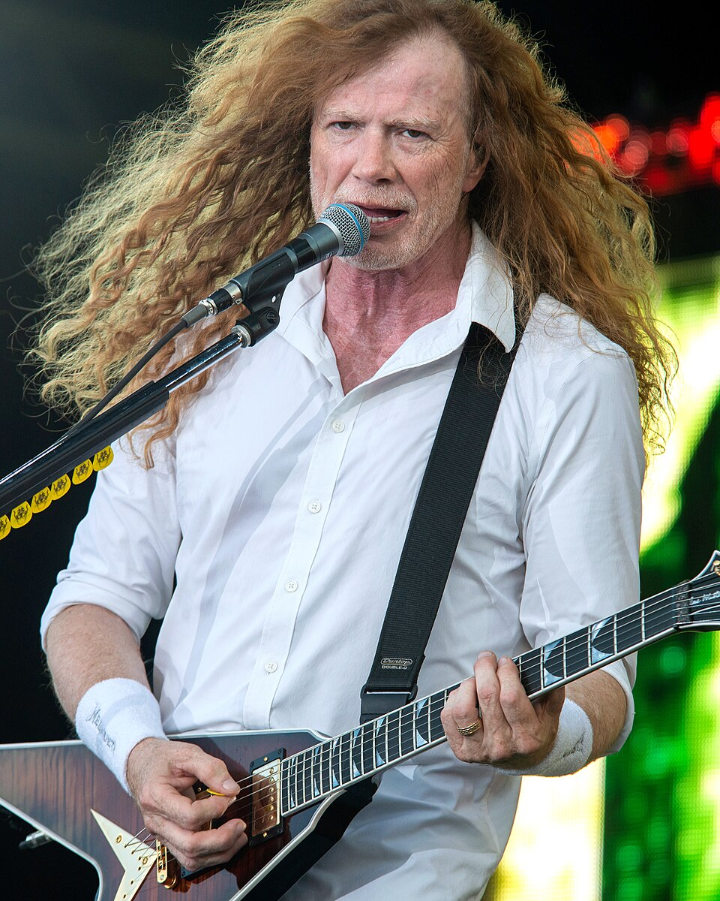
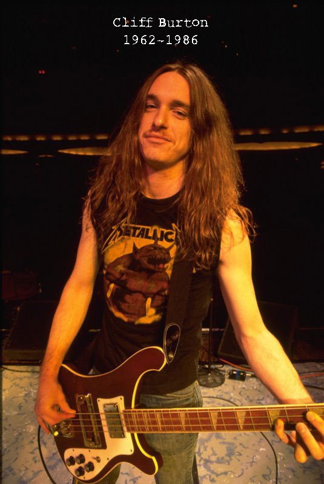

Metallica
Metallica es una banda estadounidense de heavy metal formada en 1981 en Los Ángeles. Conocidos por su estilo agresivo y potente, han sido una de las bandas más influyentes del género. Su álbum más exitoso, "Metallica" (también conocido como "The Black Album"), los consolidó como leyendas del metal.
La historia de Metallica
La historia de Metallica Metallica fue fundada en 1981 en Los Ángeles, California, por el baterista Lars Ulrich y el guitarrista y vocalista James Hetfield, tras responder a un anuncio en una revista. Pronto reclutaron a Dave Mustaine en la guitarra y a Ron McGovney en el bajo, aunque este último fue reemplazado rápidamente por Cliff Burton. En 1983, antes de grabar su primer álbum, expulsaron a Mustaine debido a problemas con el alcohol y la agresividad, reemplazándolo por Kirk Hammett. Ese mismo año lanzaron Kill 'Em All, un disco que ayudó a definir el thrash metal con su velocidad y agresividad. A medida que crecían en popularidad, la banda se trasladó a San Francisco y continuó evolucionando su sonido con álbumes más complejos. En 1986, durante una gira en Europa, la tragedia golpeó cuando su autobús se volcó y Cliff Burton perdió la vida. Su muerte dejó una gran marca en la banda, pero continuaron con Jason Newsted como su nuevo bajista. A finales de los 80 y principios de los 90, Metallica alcanzó el estrellato mundial, transformándose en una de las bandas más importantes del rock y el metal. Con el éxito llegaron cambios en su estilo y apariencia, lo que generó reacciones mixtas entre sus seguidores. A lo largo de los años, enfrentaron desafíos como la salida de Jason Newsted, disputas internas reflejadas en el documental Some Kind of Monster, y una batalla legal contra Napster. A pesar de los altibajos, la banda ha logrado mantenerse activa y relevante durante más de cuatro décadas, adaptándose a los tiempos sin perder su identidad. Con Robert Trujillo en el bajo desde 2003, Metallica sigue siendo una de las bandas más influyentes del mundo, llenando estadios y encabezando festivales a nivel global.
Los Integrantes de Metallica a lo Largo de la Historia
Metallica ha sido una de las bandas más icónicas del metal, y su evolución ha estado marcada por los músicos que han pasado por sus filas. Desde sus inicios en los años 80 hasta la actualidad, cada integrante ha dejado una huella en su sonido y en su historia.
Miembros Actuales
-
James Hetfield - Voz y Guitarra Rítmica (1981 - Presente)
Líder de Metallica, James Hetfield es el motor de la banda. Su potente voz y su agresiva guitarra rítmica han definido el sonido del grupo desde el principio. Además, ha sido el principal compositor de la banda, escribiendo algunos de los himnos más grandes del metal.

-
Lars Ulrich - Batería (1981 - Presente)
Lars es otro de los miembros fundadores y el estratega detrás del éxito de Metallica. Su estilo de batería ha evolucionado con los años, siendo una pieza clave en la identidad rítmica de la banda. También ha sido fundamental en las decisiones comerciales que llevaron a Metallica a la cima. -
Kirk Hammett - Guitarra Líder (1983 - Presente)
Kirk reemplazó a Dave Mustaine en 1983, poco antes de grabar Kill 'Em All. Su estilo melódico y su amor por los solos rápidos le han dado a Metallica un sonido más refinado. Ha sido una parte esencial de la banda durante cuatro décadas, aportando influencias del horror y el blues al metal de Metallica. -
Robert Trujillo - Bajo (2003 - Presente)
Trujillo se unió a Metallica en 2003, después de la salida de Jason Newsted. Con su energía en el escenario y su gran habilidad en el bajo, ha consolidado su lugar en la banda, aportando un sonido más robusto y una gran presencia escénica.


Exintegrantes y su Historia
-
Ron McGovney - Bajo (1981 - 1982)
Fue el primer bajista de Metallica, pero nunca se sintió completamente integrado en la banda. Dejó el grupo en 1982 debido a conflictos con Mustaine y Hetfield.

-
Dave Mustaine - Guitarra Líder (1982 - 1983)
Uno de los miembros más polémicos de Metallica. Mustaine fue despedido en 1983 debido a su comportamiento problemático relacionado con el alcohol y las drogas. Luego fundó Megadeth, convirtiéndose en una de las figuras más importantes del thrash metal.

-
Cliff Burton - Bajo (1982 - 1986)
Burton revolucionó el papel del bajista en el metal con su virtuosismo y creatividad. Participó en Kill 'Em All, Ride the Lightning y Master of Puppets, pero su trágica muerte en un accidente de autobús en 1986 dejó un vacío irreemplazable en la banda.

-
Jason Newsted - Bajo (1986 - 2001)
Newsted tomó el lugar de Burton y tuvo que soportar la presión de los fanáticos y la banda, que aún lloraban la pérdida de Cliff. Con el tiempo, demostró ser un gran músico y contribuyó en discos icónicos como ...And Justice for All y The Black Album. Salió de la banda en 2001 debido a diferencias creativas. -
Bob Rock - Bajo (2001 - 2003, temporalmente)
El productor Bob Rock tocó el bajo en St. Anger tras la salida de Newsted, pero nunca fue un miembro oficial.